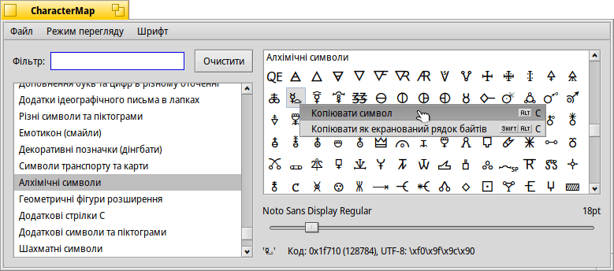

CharacterMap (Таблиця символів)
| Deskbar: | ||
| Розташування: | /boot/system/apps/CharacterMap | |
| Налаштування: | ~/config/settings/CharacterMap settings |
CharacterMap shows all characters of every Unicode block.
To the left you have the standardized Unicode blocks, together with a handy filter function.
The menu has an option to , which are areas that are untouched by the Unicode Consortium. If you activate , blocks not part of the current font are grayed out in the blocks list at the left and not shown in the list of characters on the right.
The right shows the actual characters in these blocks, using the font specified in the menu. You can determine if a symbol is part of that font (it's drawn in black), or if the system supplies a fall-back symbol from some other font (then it's drawn with a gray color).
Below the symbols you can change the font size. And below that, the values of the character currently under the mouse pointer are displayed in hex, decimal and UTF-8 notation.
Методом «drag&drop» символ легко перемістити з таблиці у текстовий редактор або клікнути правою кнопкою миші і вибрати пункт меню (ALT C) чи (SHIFT ALT C). В результаті чого отримуємо 🜐 або \xf0\x9f\x9c\x90.
Clicking on a symbol shows a magnified view of it, click again to close.